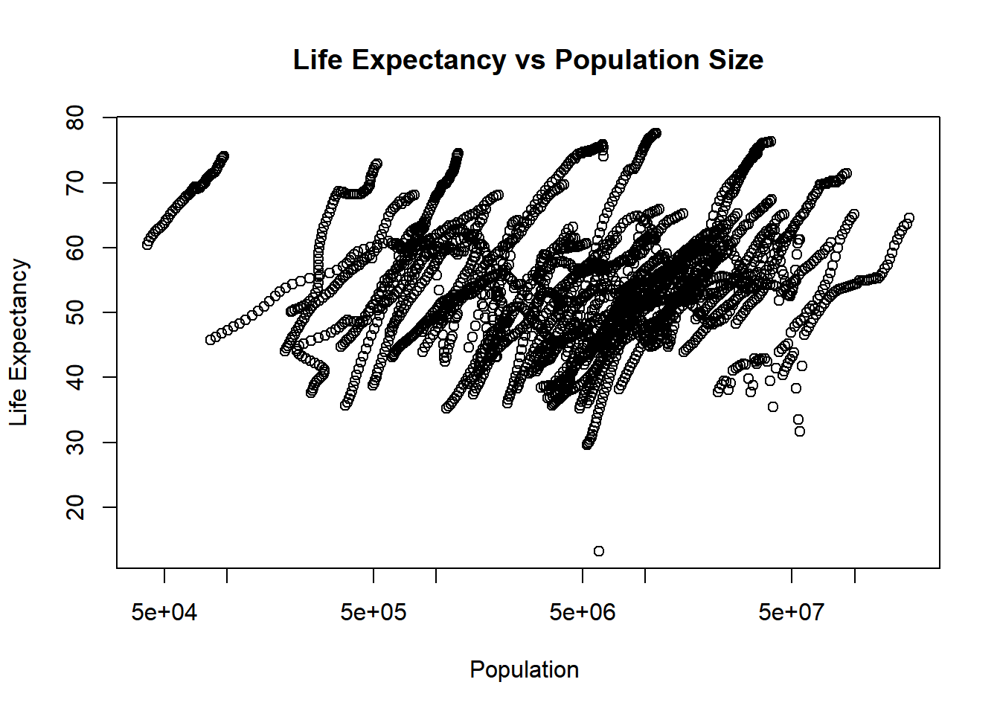
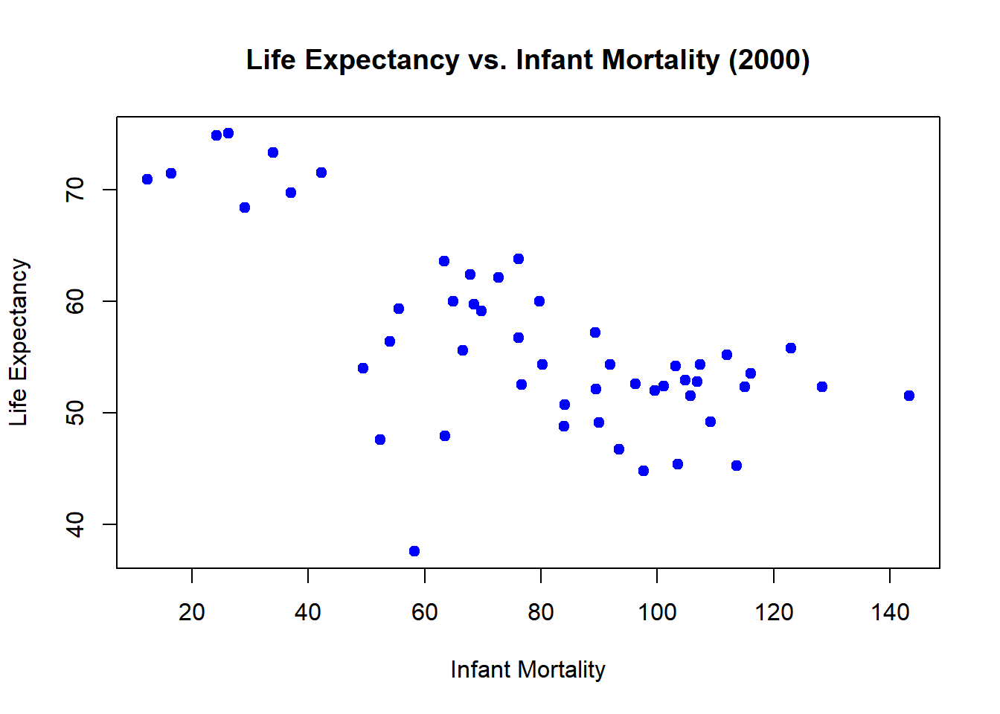
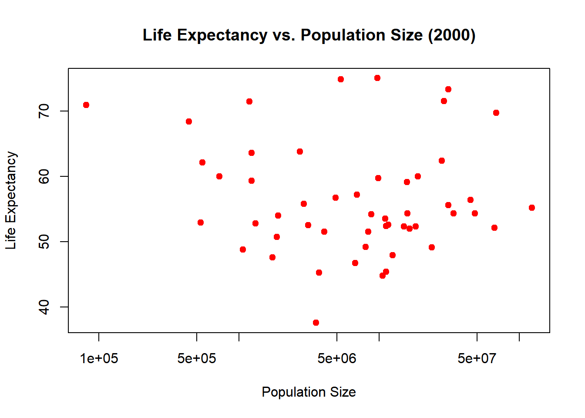
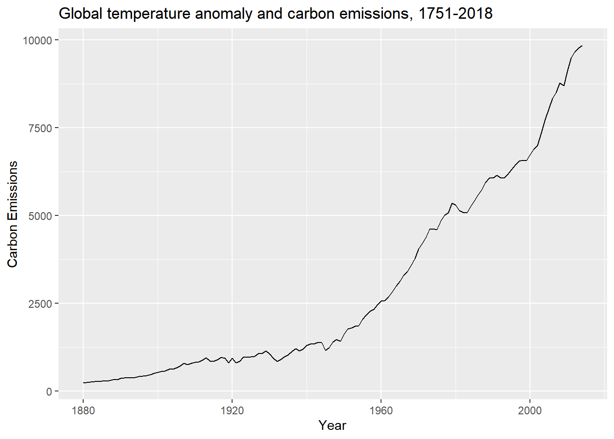
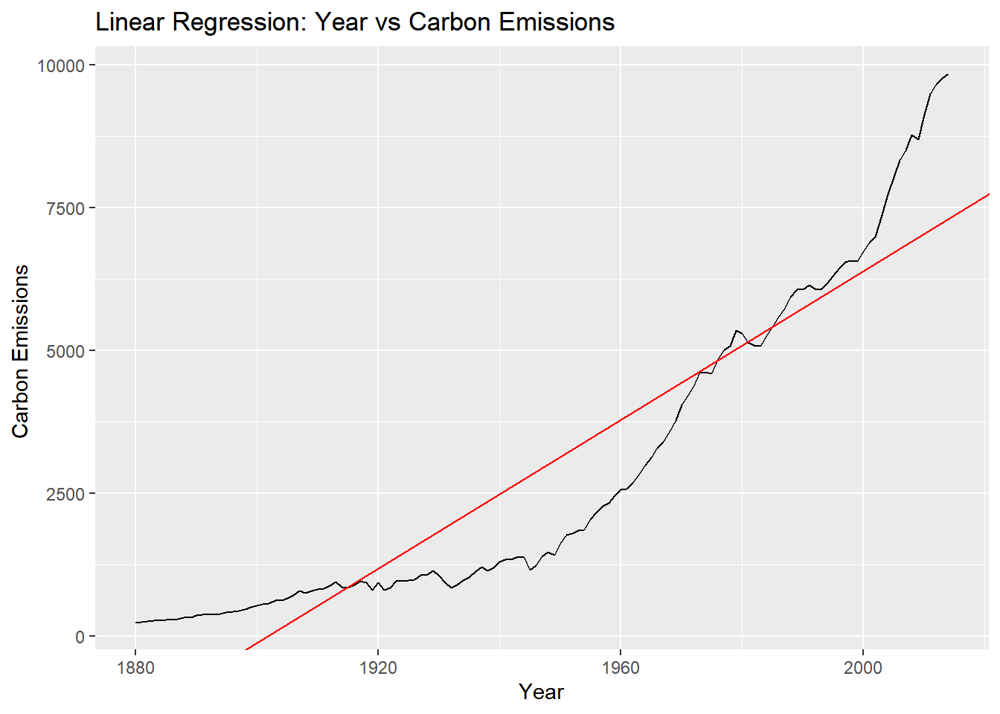
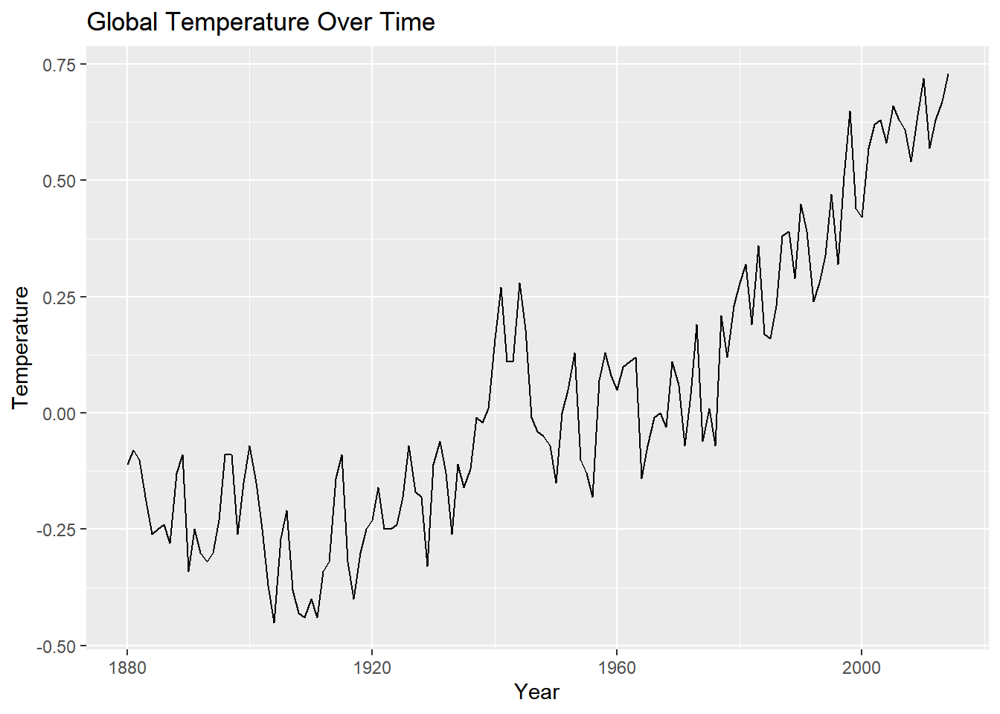

We will be using the dslabs package to access the gapminder dataset and the dplyr package for data manipulation tasks.
library("dslabs") #Accessing the gapminder dataset
Warning: package 'dslabs' was built under R version 4.3.3
library(dplyr) #Data manipulation
Warning: package 'dplyr' was built under R version 4.3.3
Attaching package: 'dplyr'
The following objects are masked from 'package:stats':
filter, lag
The following objects are masked from 'package:base':
intersect, setdiff, setequal, union
:::
Accessing the documentation for the Gapminder dataset:
This helps understand the structure and variables included in the dataset
help(gapminder)
starting httpd help server ... done
3.Exploring the structure of the gapminder dataset:
str() provides a concise summary of the dataset structure showing types of variables and sample data
str(gapminder)
'data.frame': 10545 obs. of 9 variables:
$ country : Factor w/ 185 levels "Albania","Algeria",..: 1 2 3 4 5 6 7 8 9 10 ...
$ year : int 1960 1960 1960 1960 1960 1960 1960 1960 1960 1960 ...
$ infant_mortality: num 115.4 148.2 208 NA 59.9 ...
$ life_expectancy : num 62.9 47.5 36 63 65.4 ...
$ fertility : num 6.19 7.65 7.32 4.43 3.11 4.55 4.82 3.45 2.7 5.57 ...
$ population : num 1636054 11124892 5270844 54681 20619075 ...
$ gdp : num NA 1.38e+10 NA NA 1.08e+11 ...
$ continent : Factor w/ 5 levels "Africa","Americas",..: 4 1 1 2 2 3 2 5 4 3 ...
$ region : Factor w/ 22 levels "Australia and New Zealand",..: 19 11 10 2 15 21 2 1 22 21 ...
4.Summarizing the gapminder dataset:
summary() provides a statistical summary for each variable, useful for initial data assessment
summary(gapminder)
country year infant_mortality life_expectancy
Albania : 57 Min. :1960 Min. : 1.50 Min. :13.20
Algeria : 57 1st Qu.:1974 1st Qu.: 16.00 1st Qu.:57.50
Angola : 57 Median :1988 Median : 41.50 Median :67.54
Antigua and Barbuda: 57 Mean :1988 Mean : 55.31 Mean :64.81
Argentina : 57 3rd Qu.:2002 3rd Qu.: 85.10 3rd Qu.:73.00
Armenia : 57 Max. :2016 Max. :276.90 Max. :83.90
(Other) :10203 NA's :1453
fertility population gdp continent
Min. :0.840 Min. :3.124e+04 Min. :4.040e+07 Africa :2907
1st Qu.:2.200 1st Qu.:1.333e+06 1st Qu.:1.846e+09 Americas:2052
Median :3.750 Median :5.009e+06 Median :7.794e+09 Asia :2679
Mean :4.084 Mean :2.701e+07 Mean :1.480e+11 Europe :2223
3rd Qu.:6.000 3rd Qu.:1.523e+07 3rd Qu.:5.540e+10 Oceania : 684
Max. :9.220 Max. :1.376e+09 Max. :1.174e+13
NA's :187 NA's :185 NA's :2972
region
Western Asia :1026
Eastern Africa : 912
Western Africa : 912
Caribbean : 741
South America : 684
Southern Europe: 684
(Other) :5586
5.Checking the data type of the gapminder dataset:
Ensuring that the dataset is a dataframe which is suitable for data manipulation tasks
class(gapminder)
[1] "data.frame"
PROCESSING THE DATA
1.Filtering data to include only African countries:
Creating a new data object africadata to specifically analyze this continent
'data.frame': 2907 obs. of 9 variables:
$ country : Factor w/ 185 levels "Albania","Algeria",..: 2 3 18 22 26 27 29 31 32 33 ...
$ year : int 1960 1960 1960 1960 1960 1960 1960 1960 1960 1960 ...
$ infant_mortality: num 148 208 187 116 161 ...
$ life_expectancy : num 47.5 36 38.3 50.3 35.2 ...
$ fertility : num 7.65 7.32 6.28 6.62 6.29 6.95 5.65 6.89 5.84 6.25 ...
$ population : num 11124892 5270844 2431620 524029 4829291 ...
$ gdp : num 1.38e+10 NA 6.22e+08 1.24e+08 5.97e+08 ...
$ continent : Factor w/ 5 levels "Africa","Americas",..: 1 1 1 1 1 1 1 1 1 1 ...
$ region : Factor w/ 22 levels "Australia and New Zealand",..: 11 10 20 17 20 5 10 20 10 10 ...
3.Summarizing the African data subset:
summary(africadata)
country year infant_mortality life_expectancy
Algeria : 57 Min. :1960 Min. : 11.40 Min. :13.20
Angola : 57 1st Qu.:1974 1st Qu.: 62.20 1st Qu.:48.23
Benin : 57 Median :1988 Median : 93.40 Median :53.98
Botswana : 57 Mean :1988 Mean : 95.12 Mean :54.38
Burkina Faso: 57 3rd Qu.:2002 3rd Qu.:124.70 3rd Qu.:60.10
Burundi : 57 Max. :2016 Max. :237.40 Max. :77.60
(Other) :2565 NA's :226
fertility population gdp continent
Min. :1.500 Min. : 41538 Min. :4.659e+07 Africa :2907
1st Qu.:5.160 1st Qu.: 1605232 1st Qu.:8.373e+08 Americas: 0
Median :6.160 Median : 5570982 Median :2.448e+09 Asia : 0
Mean :5.851 Mean : 12235961 Mean :9.346e+09 Europe : 0
3rd Qu.:6.860 3rd Qu.: 13888152 3rd Qu.:6.552e+09 Oceania : 0
Max. :8.450 Max. :182201962 Max. :1.935e+11
NA's :51 NA's :51 NA's :637
region
Eastern Africa :912
Western Africa :912
Middle Africa :456
Northern Africa :342
Southern Africa :285
Australia and New Zealand: 0
(Other) : 0
Creating Specific Data Views:
1.Creating a data object with selected variables:
We’ll create two new objects: one containing only infant_mortality and life_expectancy, and the other containing population and life_expectancy.
3.Exploring the structure and summary of these new datasets
str(health_data)
'data.frame': 2907 obs. of 2 variables:
$ infant_mortality: num 148 208 187 116 161 ...
$ life_expectancy : num 47.5 36 38.3 50.3 35.2 ...
summary(health_data)
infant_mortality life_expectancy
Min. : 11.40 Min. :13.20
1st Qu.: 62.20 1st Qu.:48.23
Median : 93.40 Median :53.98
Mean : 95.12 Mean :54.38
3rd Qu.:124.70 3rd Qu.:60.10
Max. :237.40 Max. :77.60
NA's :226
str(population_data)
'data.frame': 2907 obs. of 2 variables:
$ population : num 11124892 5270844 2431620 524029 4829291 ...
$ life_expectancy: num 47.5 36 38.3 50.3 35.2 ...
summary(population_data)
population life_expectancy
Min. : 41538 Min. :13.20
1st Qu.: 1605232 1st Qu.:48.23
Median : 5570982 Median :53.98
Mean : 12235961 Mean :54.38
3rd Qu.: 13888152 3rd Qu.:60.10
Max. :182201962 Max. :77.60
NA's :51
Plotting and Analysis:
Documenting plotting and further analysis helps in understanding the purpose and interpretation of visualizations and statistical results.
We can clearly see a negative correlation indicating higher infant mortality associated with lower life expectancy
2.Plotting life expectancy vs population size:
Using log scale for population to better visualize data across wide range of values
plot(africadata$population, africadata$life_expectancy, main="Life Expectancy vs Population Size", xlab="Population ", ylab="Life Expectancy",log="x")

Generally, there is a positive correlation between these two variables. Similar to the previous plot, multiple ‘lines’ composed of closely clustered data points can be observed. These lines represent the data from various countries over successive years, showing either an increase or decrease.
More Data Processing:
We need to determine the years for which the Infant Mortality variable has complete data.
Identify years with missing data for infant mortality
Around 1982, the count of missing values (NAs) for the Infant Mortality variable fell to zero and remained so until 2016, when the missing values increased again. Therefore, we should select a year within that range.
Filter data for the year 2000:
data_2000 <- africadata %>%filter(year ==2000)
Explore the structure and summary of the dataset for the year 2000:
print("Structure of data for the year 2000:")
[1] "Structure of data for the year 2000:"
str(data_2000)
'data.frame': 51 obs. of 9 variables:
$ country : Factor w/ 185 levels "Albania","Algeria",..: 2 3 18 22 26 27 29 31 32 33 ...
$ year : int 2000 2000 2000 2000 2000 2000 2000 2000 2000 2000 ...
$ infant_mortality: num 33.9 128.3 89.3 52.4 96.2 ...
$ life_expectancy : num 73.3 52.3 57.2 47.6 52.6 46.7 54.3 68.4 45.3 51.5 ...
$ fertility : num 2.51 6.84 5.98 3.41 6.59 7.06 5.62 3.7 5.45 7.35 ...
$ population : num 31183658 15058638 6949366 1736579 11607944 ...
$ gdp : num 5.48e+10 9.13e+09 2.25e+09 5.63e+09 2.61e+09 ...
$ continent : Factor w/ 5 levels "Africa","Americas",..: 1 1 1 1 1 1 1 1 1 1 ...
$ region : Factor w/ 22 levels "Australia and New Zealand",..: 11 10 20 17 20 5 10 20 10 10 ...
print("Summary of data for the year 2000:")
[1] "Summary of data for the year 2000:"
summary(data_2000)
country year infant_mortality life_expectancy
Algeria : 1 Min. :2000 Min. : 12.30 Min. :37.60
Angola : 1 1st Qu.:2000 1st Qu.: 60.80 1st Qu.:51.75
Benin : 1 Median :2000 Median : 80.30 Median :54.30
Botswana : 1 Mean :2000 Mean : 78.93 Mean :56.36
Burkina Faso: 1 3rd Qu.:2000 3rd Qu.:103.30 3rd Qu.:60.00
Burundi : 1 Max. :2000 Max. :143.30 Max. :75.00
(Other) :45
fertility population gdp continent
Min. :1.990 Min. : 81154 Min. :2.019e+08 Africa :51
1st Qu.:4.150 1st Qu.: 2304687 1st Qu.:1.274e+09 Americas: 0
Median :5.550 Median : 8799165 Median :3.238e+09 Asia : 0
Mean :5.156 Mean : 15659800 Mean :1.155e+10 Europe : 0
3rd Qu.:5.960 3rd Qu.: 17391242 3rd Qu.:8.654e+09 Oceania : 0
Max. :7.730 Max. :122876723 Max. :1.329e+11
region
Eastern Africa :16
Western Africa :16
Middle Africa : 8
Northern Africa : 6
Southern Africa : 5
Australia and New Zealand: 0
(Other) : 0
More Plotting:
Plot 1: Life Expectancy vs. Infant Mortality:
plot(data_2000$infant_mortality, data_2000$life_expectancy,main ="Life Expectancy vs. Infant Mortality (2000)",xlab ="Infant Mortality",ylab ="Life Expectancy",pch =19,col='blue') # pch = 19 makes the points solid circles

Plot 2: Life Expectancy vs. Population Size
plot(data_2000$population, data_2000$life_expectancy,main ="Life Expectancy vs. Population Size (2000)",xlab ="Population Size",ylab ="Life Expectancy",log ="x", # sets the x-axis to logarithmic scalepch =19, col='red') # pch = 19 makes the points solid circles

Summary of model fits:
Using linear models to understand the influence of infant mortality and population size on life expectancy
1.Linear Regression for Life Expectancy vs. Infant Mortality:
fit1 <-lm(life_expectancy ~ infant_mortality, data = data_2000)summary(fit1) # Outputs the summary of the regression model
Call:
lm(formula = life_expectancy ~ infant_mortality, data = data_2000)
Residuals:
Min 1Q Median 3Q Max
-22.6651 -3.7087 0.9914 4.0408 8.6817
Coefficients:
Estimate Std. Error t value Pr(>|t|)
(Intercept) 71.29331 2.42611 29.386 < 2e-16 ***
infant_mortality -0.18916 0.02869 -6.594 2.83e-08 ***
---
Signif. codes: 0 '***' 0.001 '**' 0.01 '*' 0.05 '.' 0.1 ' ' 1
Residual standard error: 6.221 on 49 degrees of freedom
Multiple R-squared: 0.4701, Adjusted R-squared: 0.4593
F-statistic: 43.48 on 1 and 49 DF, p-value: 2.826e-08
Regression Analysis: Life Expectancy vs. Infant Mortality (2000)
Objective
The goal was to analyze the impact of infant mortality on life expectancy among African countries in the year 2000.
Methodology
A linear regression model was fitted with life expectancy as the dependent variable and infant mortality as the predictor.
Results
Model Coefficients:
Intercept: The model estimates a life expectancy of 71.29 years when the infant mortality rate is zero.
Infant Mortality Coefficient: The negative coefficient of -0.18916 indicates that as infant mortality increases by one unit, life expectancy decreases by approximately 0.189 years.
Statistical Significance:
The p-value for the infant mortality coefficient is extremely low (< 2.83e-08), suggesting a statistically significant negative impact of infant mortality on life expectancy.
Model Fit:
The R-squared value of 0.4701 implies that about 47.01% of the variability in life expectancy across the dataset can be explained by differences in infant mortality rates.
Conclusion
The analysis confirms a significant negative correlation between infant mortality and life expectancy for the year 2000 in African countries. This suggests that policies aimed at reducing infant mortality could be effective in increasing life expectancy.
Linear Regression for Life Expectancy vs. Population Size
Using logarithmic transformation for population size:
fit2 <-lm(life_expectancy ~ (population), data = data_2000)summary(fit2) # Outputs the summary of the regression model
Call:
lm(formula = life_expectancy ~ (population), data = data_2000)
Residuals:
Min 1Q Median 3Q Max
-18.429 -4.602 -2.568 3.800 18.802
Coefficients:
Estimate Std. Error t value Pr(>|t|)
(Intercept) 5.593e+01 1.468e+00 38.097 <2e-16 ***
population 2.756e-08 5.459e-08 0.505 0.616
---
Signif. codes: 0 '***' 0.001 '**' 0.01 '*' 0.05 '.' 0.1 ' ' 1
Residual standard error: 8.524 on 49 degrees of freedom
Multiple R-squared: 0.005176, Adjusted R-squared: -0.01513
F-statistic: 0.2549 on 1 and 49 DF, p-value: 0.6159
Regression Analysis: Life Expectancy vs. Population Size (2000)
Objective
The aim was to explore whether the size of a population in African countries in the year 2000 impacts life expectancy.
Methodology
A linear regression model was employed with life expectancy as the outcome and the population size as the predictor.
Results
Model Coefficients:
Intercept: The model predicts a base life expectancy of 5593 years, adjusting for population size.
Log(Population) Coefficient: The coefficient of 2.756e-08 suggests a negligible change in life expectancy with increasing population size.
Statistical Significance:
The p-value for the log of population size is 0.6159, indicating that this model does not find a statistically significant impact of population size on life expectancy.
Model Fit:
The R-squared value is only 0.005176, highlighting that population size explains a very small fraction of the variability in life expectancy.
The negative adjusted R-squared value suggests that the model does not adequately predict life expectancy and might perform worse than a model with no predictors at all.
Conclusion
The analysis indicates that there is no significant correlation between population size and life expectancy among African countries for the year 2000. This suggests that other factors not included in this model might be more influential in determining life expectancy.
This section is contributed by JOAQUIN RAMIREZ
# Loading ggplot2 package for data visualizationlibrary(ggplot2)
Warning: package 'ggplot2' was built under R version 4.3.3
# In order to determine what datasets are available in the dslabs package (use code below)# data(package = "dslabs")
After reviewing the datasets available, I selected the “temp_carbon” dataset for further exploration. This dataset contains global temperature anomaly data and carbon emissions from the years 1751 through 2018. The goal of this analysis is to examine the relationship between global temperature anomalies and carbon emissions over this extensive time period.
# Loads the temp_carbon dataset from the dslabs packagedata("temp_carbon")# This provides an overview of the data types and number of observationsstr(temp_carbon)
# View the summary statistics of the temp_carbon dataset.summary(temp_carbon)
year temp_anomaly land_anomaly ocean_anomaly
Min. :1751 Min. :-0.450 Min. :-0.69000 Min. :-0.46000
1st Qu.:1818 1st Qu.:-0.180 1st Qu.:-0.31500 1st Qu.:-0.17000
Median :1884 Median :-0.030 Median :-0.05000 Median :-0.01000
Mean :1884 Mean : 0.060 Mean : 0.07086 Mean : 0.05273
3rd Qu.:1951 3rd Qu.: 0.275 3rd Qu.: 0.30500 3rd Qu.: 0.25500
Max. :2018 Max. : 0.980 Max. : 1.50000 Max. : 0.79000
NA's :129 NA's :129 NA's :129
carbon_emissions
Min. : 3.00
1st Qu.: 13.75
Median : 264.00
Mean :1522.98
3rd Qu.:1431.50
Max. :9855.00
NA's :4
The “temp_carbon” dataset contain 268 observations of 5 variables: year, temp_anomaly, land_anomaly, ocean_anomaly, and carbon_emissions. The dataset also contains some missing values (NAs) which will be removed before further analysis.
# This gives a quick glance at the dataset.head(temp_carbon)
# Plotting the Global Carbon Emissions ggplot(temp_carbon, aes(x = year, y = carbon_emissions)) +geom_line() +# Using a line plot to show the trend of carbon emissionslabs(title ="Global temperature anomaly and carbon emissions, 1751-2018", x ="Year", y ="Carbon Emissions")
# Fiting a linear regression model with carbon emissions as the outcome and year as the predictorfit_carbon <-lm(carbon_emissions ~ year, data = temp_carbon)summary(fit_carbon) # The summary of the linear regression model
Call:
lm(formula = carbon_emissions ~ year, data = temp_carbon)
Residuals:
Min 1Q Median 3Q Max
-1653.40 -972.22 58.83 582.55 2546.03
Coefficients:
Estimate Std. Error t value Pr(>|t|)
(Intercept) -1.240e+05 4.467e+03 -27.75 <2e-16 ***
year 6.518e+01 2.294e+00 28.42 <2e-16 ***
---
Signif. codes: 0 '***' 0.001 '**' 0.01 '*' 0.05 '.' 0.1 ' ' 1
Residual standard error: 1039 on 133 degrees of freedom
Multiple R-squared: 0.8586, Adjusted R-squared: 0.8575
F-statistic: 807.4 on 1 and 133 DF, p-value: < 2.2e-16
# Plotting the fitted linear regression line for carbon emissionsggplot(temp_carbon, aes(x = year, y = carbon_emissions)) +geom_line() +# Using a line plot to show the trend of carbon emissionsgeom_abline(slope = fit_carbon$coefficients[2], intercept = fit_carbon$coefficients[1], col ="red") +# Adding a regression linelabs(title ="Linear Regression: Year vs Carbon Emissions", x ="Year", y ="Carbon Emissions ")

As we can observe in the plotted graph, there seems to be an increase in Carbon emissions. This is confirmed by the linear regression model. The high R-squared value only further confirms that the model explains a large portion of the variance in carbon emissions. The high levels of Carbon emissions seem to really begin to take off during WWII.
Note: The red regression line represents the relationship between year and carbon emissions modeled by the linear regression analysis above.
# Plotting the Global Temperature over Timeggplot(temp_carbon, aes(x = year, y = temp_anomaly)) +geom_line() +# Ussing a line plot to show the trend of temperature over timelabs(title ="Global Temperature Over Time", x ="Year", y ="Temperature")

# Fit a linear regression model to help understand the trend of temperature anomalies over timefit_temp <-lm(temp_anomaly ~ year, data = temp_carbon)# Viewing the summary of the linear regression modelsummary(fit_temp)
Call:
lm(formula = temp_anomaly ~ year, data = temp_carbon)
Residuals:
Min 1Q Median 3Q Max
-0.30153 -0.11563 -0.01885 0.10930 0.33240
Coefficients:
Estimate Std. Error t value Pr(>|t|)
(Intercept) -1.316e+01 6.560e-01 -20.07 <2e-16 ***
year 6.778e-03 3.368e-04 20.12 <2e-16 ***
---
Signif. codes: 0 '***' 0.001 '**' 0.01 '*' 0.05 '.' 0.1 ' ' 1
Residual standard error: 0.1525 on 133 degrees of freedom
Multiple R-squared: 0.7528, Adjusted R-squared: 0.7509
F-statistic: 404.9 on 1 and 133 DF, p-value: < 2.2e-16
# This plot represents the relationship modeled by the linear regressionggplot(temp_carbon, aes(x = year, y = temp_anomaly)) +geom_line() +# adding the line plot to show the trend of temperature anomalies over timegeom_abline(slope = fit_temp$coefficients[2], intercept = fit_temp$coefficients[1], col ="red") +# This adds the regression line on the graphlabs(title ="Linear Regression: Year vs Temperature Anomaly", x ="Year", y ="Temperature")

As observed in the plotted graph, temperatures have noticeably increased over time. This upward trend is cause by the surge in carbon emissions. The high R-squared value of 0.7528 suggests a strong relationship between year and temperature anomaly. Additionally, the low p-value ( 2.2e-16) confirms the statistical significance of this relationship, suggesting that the year is a significant predictor of temperature.
Note: The red line in the plot provides a visual representation of the linear regression model’s prediction of how temperature anomaly changes with each passing year
In conclusion, after further analysis and using visualization with linear regression models, I can confirm there exist a significant relationship between increasing carbon emissions and rising temperatures. The linear regression model indicates that temperatures changes on average of 0.0068. Similarly, on average, carbon emissions increases by 6.518e+01 per year.